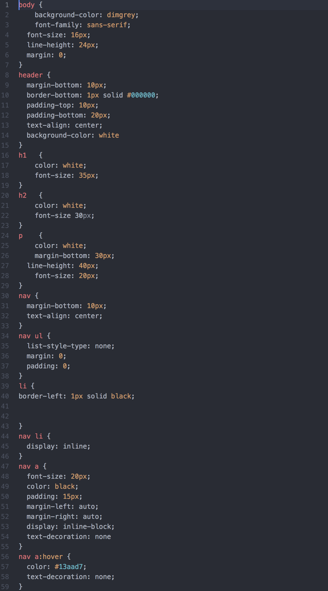
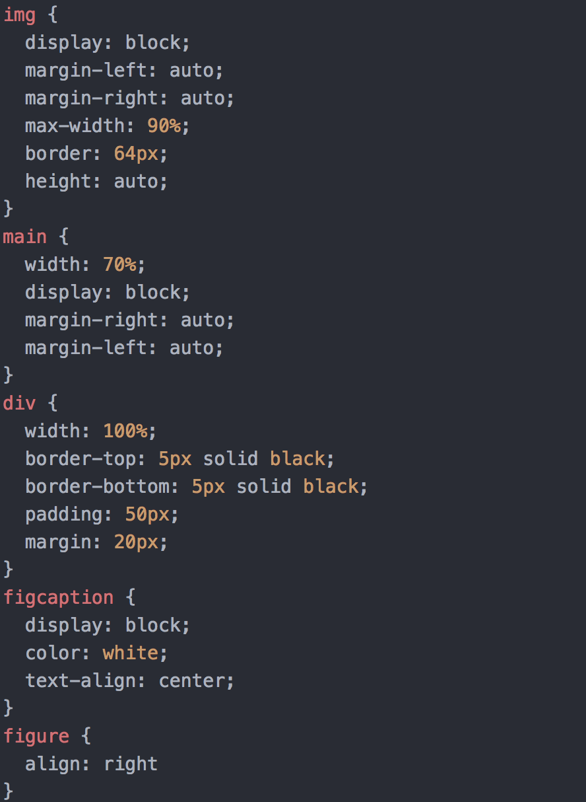

Projects
Pac-Man
One project I would like to show is one that I did in my Intro to New Media class in which we were allowed to create anything as long as we made use of 3 applications we went over in class. I ended up using Adobe Illustrator, Premiere and Photoshop in order to make my own version of Pac-Man.
Web Development Site
This next project was a site I built going over multiple aspects of being a web developer.
I did some research on all of the different aspects that go into building websites and put them together in HTML and CSS.

